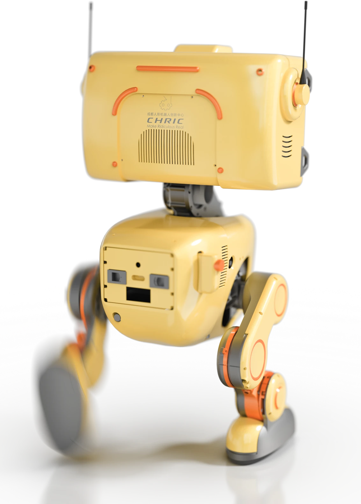

屏幕与表情
在 18.58 英寸屏幕上切换角色表情、播放主题画面，让同一台机器人适配不同活动。
交互屏幕
全身自由度
站立总高 · 不含天线
整机重量 · 含电池
02 / CAPABILITIES
在 18.58 英寸屏幕上切换角色表情、播放主题画面，让同一台机器人适配不同活动。
头颈动作与双足步态配合，可编排舞蹈和巡游。跟随模式最多支持 10 台机器人。
可更换主题装饰面板，结合屏幕素材呈现活动角色与文化 IP。
03 / IN ACTION
从编队巡游到川剧主题造型
04 / SPECIFICATIONS
镋钯 · 文旅版

| 站立总高 | 905 mm（不含天线） |
|---|---|
| 整机重量 | 33.4 kg（含电池） |
| 全身自由度 | 16 个 |
| 最大前进速度 | 约 0.16 m/s |
| 屏幕 | 18.58 英寸，亮度最高 1000 尼特 |
| 通信 | 4G、Wi-Fi、蓝牙 |
| 电池 | 快拆电池，配独立充电设备 |
| 运行环境 | 室内外平坦硬化地面，0–35 ℃ |
| 预估续航 | 原地站立 2.5 小时 原地踏步 2 小时 原地扭动 1.5 小时 |
续航为预估值。条件为环境温度 25 ℃、水平硬化地面、屏幕持续播放视频。